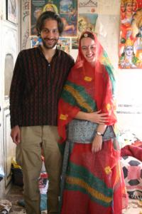

Le 13 décembre 2004,
Apres une bonne nuit reparatrice, nous voila partis gambader dans la petite ville de Pushkar. Les magasins qui jalonnent les rues sont presents mais pas agressifs, c’est agreable ! En plus, ils vendent de jolis vetement ou bijoux, je me laisse d’ailleurs tenter par un beau collier bleu.
 Nous nous arretons quelques instants pour admirer un beau temple hindou et une jeune fille indienne nous interpelle de son balcon, juxtaposant le temple pour nous inviter a monter la voir. Accompagnes d’un couple de canadiens, nous nous retrouvons assis a meme le sol dans sa maison a essayer de discuter avec elle. Son anglais n’etant pas au point, nous communiquons surtout par gestes, ce qui s’avere etre assez amusant. Son oncle et son frere se joignent a nous, la grand-mere reste en arriere et nous envoie juste quelques sourires de temps en temps. La jeune fille indienne nous offre du cafe tres gentiment et echange avec nous a coups de rires et de bisous. Elle est adorable ! A un moment donne, sans doute prise d’une envie de jouer a la poupee avec nous, elle se met en tete de vouloir nous habiller, la canadienne et moi, avec ses propres etoffes en soie. Nous voila fagoter a l’indienne, en sari, portant jusqu’a ses bijoux ! Elle est toute contente et saute litteralement de joie, c’est un vrai plaisir de la regarder ! Quelques photos sont prises afin d’immortaliser l’evenement et ils sont tout content de pouvoir voir la photo en live sur l’appareil numerique de Michael. Ils en redemandent meme ! Je lui offre une photo de la Tour Eiffel que j’avais emporte avec moi a ce dessein et elle me donne une de ses barrettes en echange. Son oncle veut echanger sa ceinture avec celle de Michael, mais bon, il ne faut pas pousser non plus ! Bref, belle rencontre dans ce temple !
Nous continuons notre visite de la ville par le lac sacre de Pushkar. Il est tellement sacre qu’on nous interdit meme de le prendre en photo et de marcher a proximite de lui en chaussures... Quelques saints hommes essaient de nous donner des fleurs pour les jeter dans le lac, mais nous ne sommes pas dupes ! Nous avons ete prevenus que c’etait une ruse afin de soutirer de l’argent aux touristes en les obligeant, une fois les fleurs jetes, a les payer pour qu’ils puissent executer de belles prieres pour nous. Il parait meme qu’ils peuvent devenir violents si nous refusons de payer. Je pense que nous avons evite les ennuis en refusant ces fleurs...
Nous finissons notre journee, assis sur les marches menant au lac, en ecoutant des percussions au loin et en admirant les couleurs changeantes de l’eau au coucher du soleil. C’est superbe !
Eve-Laure
T’es superbe habillée comme ça Vovore !!! Je suis impressionnée par la barbe de Michael !! :)
Bonne semaine
Bisous
Caro
Eve-laure,
C’est qui l’ours à côté de toi ?
:-)
Bisous
{kind=link}